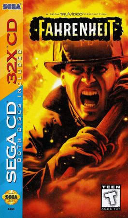

Sega Mega-CD 32X
Released: 1994
6 games
The Sega Mega Drive console received two add-on hardware upgrades during its life time: the Sega Mega-CD and Sega 32X. It is possible to install both of these on the same base console, creating a system called the Sega Mega-CD 32X (PAL region) or Sega CD 32X (USA). This opens the possibility of software that can utilise both the Mega-CD's enhanced storage capacity and ability to play Red Book CD audio, and the 32X's enhancements in graphics and sound capabilities. Six games were released that require both add-on units in order to be played. All of these titles are full motion video based games, which were previously available as standalone Mega-CD games, and later had their FMV assets upgraded to take advantage of the 32X's improved graphics. As such, all six were released on CDs, with the cart slot of the 32X being unused during gameplay. Japan did not receive any Mega-CD 32X games, however North America received five while Europe recieved four of those five. Surgical Strike, once bound for a North American release, ended up being an exclusive title in Brazil (and curiously wound up being the only Mega-CD 32X game to reach this region). A further half-dozen titles were in development for the Mega-CD 32X at one stage, but were all cancelled, some merely appearing in Mega-CD form and some being moved to the Sega Saturn.
| Cover | Title | Year | Genre | Publisher | Developer |
|---|---|---|---|---|---|

|
Corpse Killer | 1995 | Shooter | Digital Pictures | Digital Pictures |
|
 |
Fahrenheit | 1995 | Action | Sega | SEGA Studios |

|
Night Trap | 1994 | Strategy | Digital Pictures | Digital Pictures |

|
Slam City with Scottie Pippen | 1995 | Sports | Digital Pictures | Digital Pictures |

|
Supreme Warrior | 1994 | Action | Digital Pictures | Digital Pictures |

|
Surgical Strike | 1995 | Shooter | Sega | The Code Monkeys |